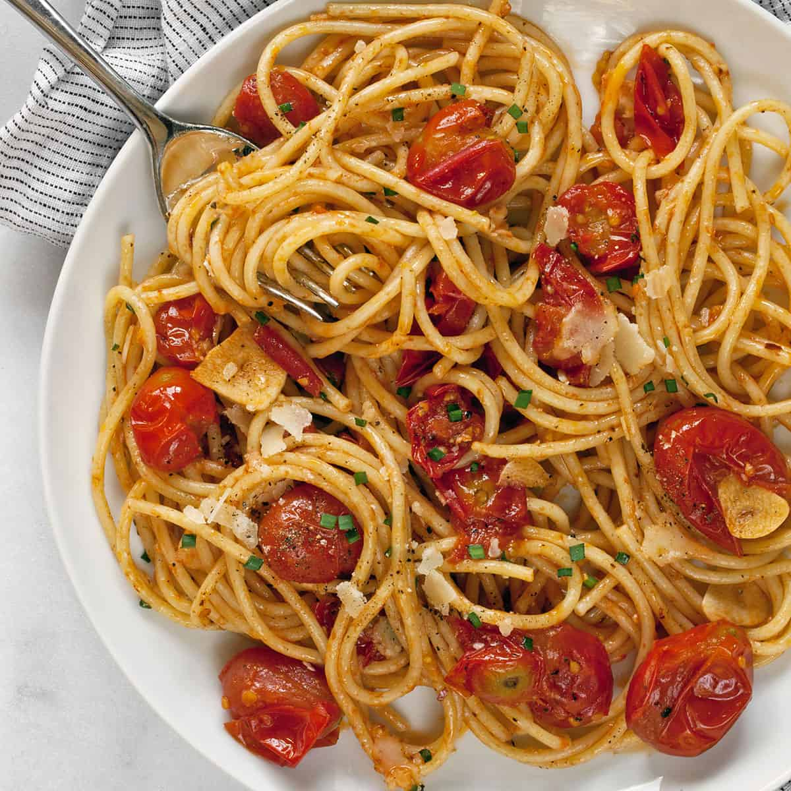

Easy Tomato Pasta
A simple and comforting tomato pasta that is perfect for a quick lunch or dinner.

Prep: 10 minutes
Cook: 20 minutes
Serves: 2 people
Ingredients
- 200 grams of pasta
- 1 tablespoon of olive oil
- 2 cloves of garlic
- 1 can of crushed tomatoes
- Salt and black pepper
- Fresh basil
- Parmesan cheese
Instructions
- Boil a pot of water and cook the pasta.
- Heat the olive oil in a pan.
- Add the garlic and cook for about one minute.
- Add the tomatoes, salt, and black pepper.
- Cook the sauce for about ten minutes.
- Add the cooked pasta and mix everything together.
- Serve with fresh basil and Parmesan cheese.